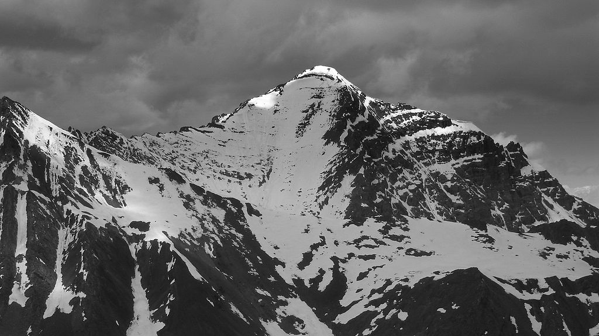
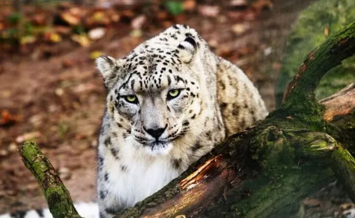

About Hemis National Park Ladakh

Hemis National Park is a famous wildlife destination in Ladakh which is famous for its high population of snow leopards and a wide variety of birds. It is the second largest continuous protected area in India, after Nanda Devi Biosphere Reserve. The park, spread across an area of 3,350 square kilometers, is a must visit not just for wildlife enthusiasts, but also for photographers and trekkers, and there are opportunities for both.
Flora in Hemis National Park

Hemis National Park does not receive much rainfall throughout the year, as it is located in the rain shadow area of the Himalayas. Hence, the park is dotted with dry forests, with fir being present at lower altitudes.
The most commonly found trees are alpine and steppe, with its lower areas being dominated by plant species which require very less moisture including juniper, fir & dry birch. The park is also home to several rare and endangered medicinal plants.
Fona in Hemis National Park

1-Hemis National Park is noted for its rich wildlife, including animals that are endangered and found exclusively at high altitude areas. The park is home to 16 mammals species and 73 bird species.
2-Some of the high altitude animals which you can see in this park are bharal (bleu sheep), shapu (Ladakhi Urial), Himalayan Marmot, Himalayan Mouse Hare and the main attraction, the snow leopard. Other animals which one can spot inside the park are Eurasian Brown Bear, Red Fox and Tibetan Wolf.
3-Bird lovers should also not miss the opportunity of visiting Hemis National Park during their trip to Ladakh. It is home to a wide variety of birds, with some of the famous ones being golden eagle, lammergeier vulture, robin accentor, streaked rosefinch, red-billed chough and fire-fronted serin.
Other Attraction within Hemis Park

Hemis Monastery : Hemis Monastery is one of the richest monasteries in Ladakh. Situated about 45 kilometers from the capital city, Leh, it is known for hosting the Hemis Festival, which is celebrated over a course of 2 days. The festival is marked by the unfurling of thangkas (Buddhist paintings) and chhams (masked dances performed by monks).
Ganda La : Ganda La, also known as Kanda La, is a high mountain pass located within the premises of Hemis National Park. It connects the villages of Markha Valley to Leh and is often used by local people.